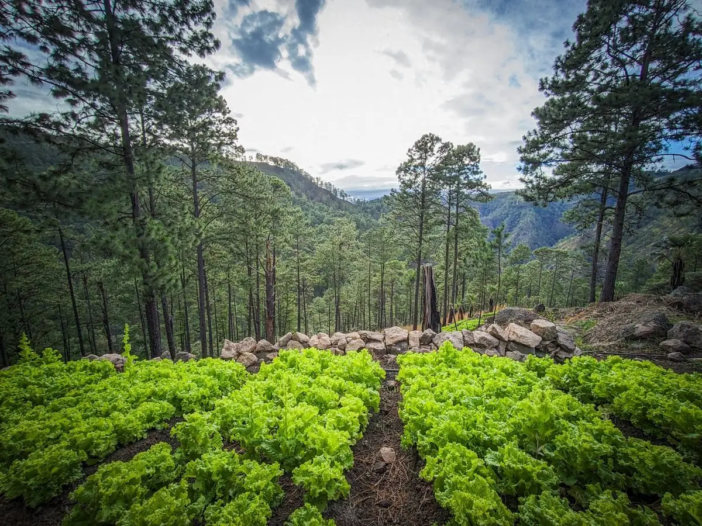
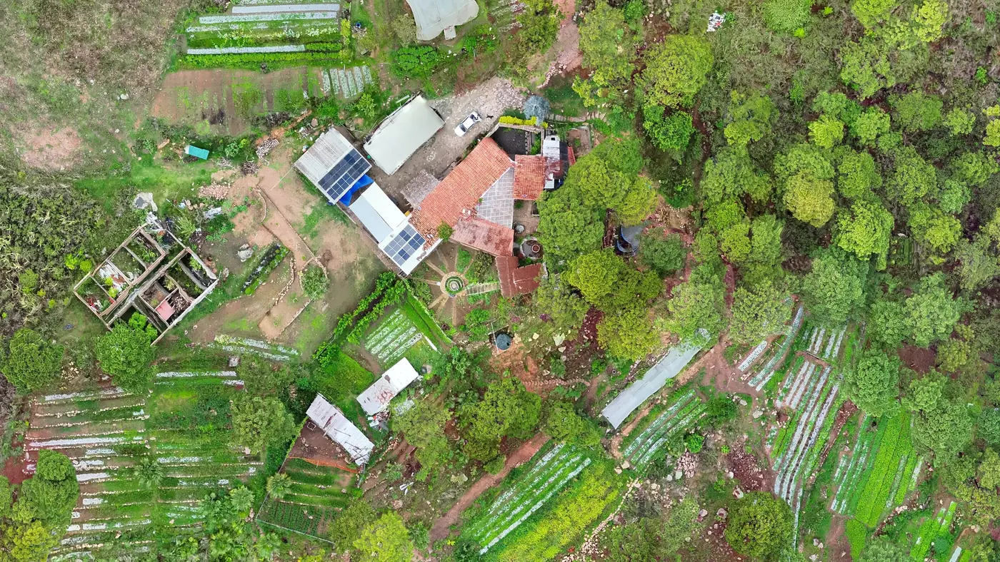
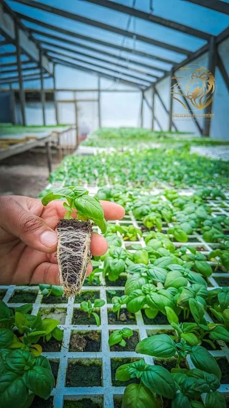

VALLE DE ÁNGELES · HONDURAS
La naturaleza
se vive.
Y se saborea.
De nuestras manos a tu mesa.
De la montaña a tus mejores recuerdos.
LA HACIENDA DESDE EL AIRE
Así es la finca.
Y así llegas a El Torno.
Gira el terreno, acércate y elige un lugar.
La línea verde es el lindero de la finca.
Preparando tu ventana al Paraíso…

Explora los lugares con los botones de abajo. La vista 3D no está disponible en este navegador.
Terreno y fotografía aérea reales, del vuelo de dron de 2026.
Fuera del vuelo, relieve con datos abiertos de elevación.
UN LUGAR. MUCHAS FORMAS DE DISFRUTARLO.
Un poco de Paraíso.
A tu manera.
Somos una hacienda que cultiva alimentos y momentos. Ven por lo fresco, quédate por la calma y vuelve por todo lo que aquí se siente.

Lo bueno empieza
en la tierra.
Hierbas, hojas y frescura para tu cocina.
Conoce nuestra cosecha ↗Tu pausa tiene
un lugar.
Naturaleza, encuentros y tiempo para ti.
Encuentra tu experiencia ↗DE NUESTRA TIERRA
El sabor de lo fresco.
NUESTRAS RAÍCES
Cultivamos con las manos.
Recibimos con el corazón.
En la aldea Los Dos Ríos, Valle de Ángeles, entre pinos y a más de 1.000 metros, la agricultura y la vida en la montaña se encuentran. Cuidamos nuestros cultivos, aprovechamos la energía solar y compartimos este lugar con quienes buscan volver a lo esencial.
Conoce la vida en la hacienda ↗DESDE EL AIRE
Así se ve
la hacienda.
La casa de teja, el jardín de la fuente, los invernaderos y los cultivos entre pinos, fotografiados con dron.
Abrir en Google Maps ↗